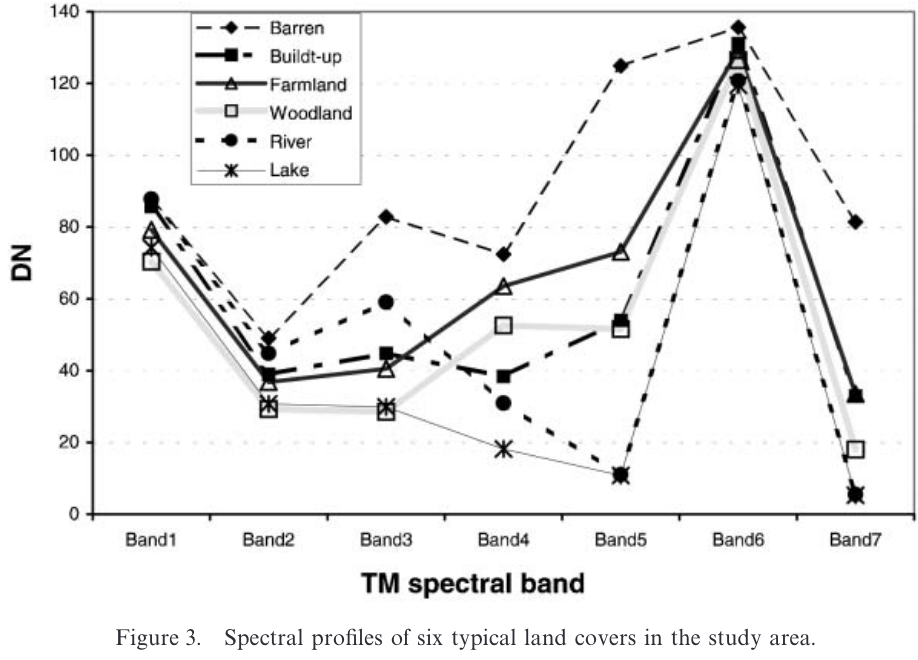
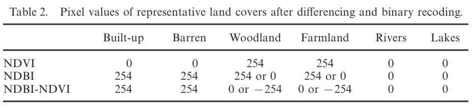
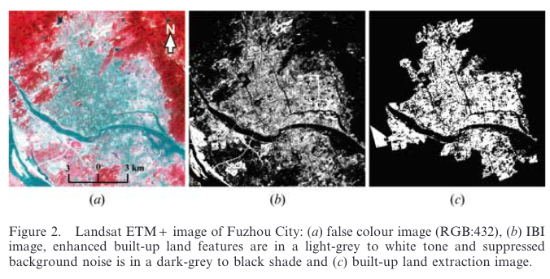

3 Introduction to Existing Built-up Indices
The concept of a built-up index emerged in the 199s, when urban remote sensing researchers began seeking simple spectral ratios or band combinations to distinguish impervious surfaces from vegetation, soil, and water.
Below is a chronological overview of the key built-up indices (thermal-band-derived indices are not included yet) and their development.
3.1 UI (1996)
The Urban Index (UI) was proposed by Kawamura et al., 1996, which utilized Landsat TM band 7 (2.08µm - 2.35µm) and band 4 (0.76µm - 0.9µm). They study observed an inverse relationship between these two bands over urban areas, making their ratio useful for detecting built-up land.
📐 Formula – UI \[ UI = \frac{SWIR - NIR}{SWIR + NIR} = \frac{B7 - B4}{B7 + B4} \]
3.2 NDBI (2003)
The Normalized Difference Built-up Index (NDBI), proposed by Zha et al. (2003), is the most widely used index for detecting built-up and barren areas.
However, it is often misused as a standalone tool. The author clearly emphasized that NDBI should be combined with NDVI for effective mapping:
In this study we proposed a new and simple method for the rapid and accurate mapping of urban areas. This method is based on the combinatinal use of NDBI and NDVI.
📐 Formula – NDBI \[ NDBI = \frac{SWIR - NIR}{SWIR + NIR} = \frac{B5 - B4}{B5 + B4} \]
- SWIR (Short-Wave Infrared) reflects strongly from urban materials (concrete, asphalt).
- NIR (Near-Infrared) reflects from vegetation.

To evaluate the effectiveness of NDBI, Zha et al. (2003) selected Nanjing, China, as their study area. They classified the landscape into six land-cover types:
- Barren land
- Built-up areas
- Farmland
- Woodland
- River
- Lake
From the spectral signatures of these classes, they observed:
- The NDVI (difference between NIR and Red bands) is positive for woodland and farmland, but negative for all other classes.
- The NDBI (difference between SWIR1 [Band 5] and NIR) is positive for built-up and barren lands, but negative for all others.
To map built-up land, they applied the following procedure: 1. Assign values: Positive NDBI or NDBI values were coded as 254, and negative values as 0. 2. Combine indices: They computed (NDBI - NDVI).
- Built-up and barren areas resulted in positive values.
- Farmland and woodland become 0 or -254.
- Water bodies were classified as 0.

- Reclassify:
- Positive values were labeled as built-up.
- 0 or -254 values were labeled as non-built-up.
This approach demonstrated that NDBI combined with NDVI could effectively isolated built-up areas from vegetation, water, and other land covers in the urban and barren landscapes of Nanjing.
3.3 IBI (2008)
The Index-Based Built-up Index (IBI) was proposed by Xu, 2008 for the rapid extraction of built-up land features in satellite imagery. It was tested using a Landsat ETM+ image of Fuzhou City in China.
IBI is notable for being the first built-up index to use thematic index-derived bands instead of using original Landsat TM bands. It combines three thematic indices representing vegetation, water, and built-up land:
- 🌿 Soil Adjusted Vegetation Index (SAVI) \[ SAVI = \frac{(NIR - Red)(1 + L)}{(NIR + Red + L)} \]
SAVI is suggested to use with plant cover as low as 15%, while NDVI (L = 0) can work for areas with more than 30% plant coverage. The author applied NDVI for his case study in Fuzhou.
- 🌊 Modified Normalized Difference Water Index (MNDWI)
\[ MNDWI = \frac{Green - SWIR}{Green + SWIR} = \frac{B2 - B5}{B2 + B5} \]
- 🏙️ Normalized Difference Built-up Index (NDBI)
\[ NDBI = \frac{SWIR - NIR}{SWIR + NIR} = \frac{B5 - B4}{B5 + B4} \]
The IBI was tested for three land cover types: Vegetation, Built-up land, and Water. IBI showed its ability to distinguish built-up area from vegetation and water bodies. However, the author didn’t address if IBI can separate built-up from bare soil. Based on the spectral responses and interpretation of results, it implied that IBI cannot reliably separate built-up from bare lands.

The resultant image is a binary image (IBI = 0.013) (Figure 2(b)), only showing the extracted built-up land information (in white). Non-urban areas were further masked out using a vector polygon defining the urban outline and only the built-up lands inside the urban region were retained as urban built-up lands (Figure 2(c))
📐 Formula – IBI \[ IBI = \frac{NDBI - (SAVI + MNDWI) / 2}{NDBI + (SAVI + MNDWI) / 2} \]
3.4 BU (2010)
The Built-up (BU) introduced by He et al., 2010 is a modified version of the original NDBI. As previously mentioned, the original method proposed by Zha et al. (2003) extracted built-up areas using a binary classification of (NDBI - NDVI).
In contrast, this paper directly used the continuous values of (NDBI - NDVI) and proposed a semi-automatic segmentation approach to determine the optimal threshold to separate built-up from non-built-up area.
Rather than introducing that specific segmentation method here, this handbook will instead demonstrate the use of the Total Operating Characteristic (TOC) (Pontius & Si, 2014), which provides a more intuitive and efficient way to identify optimal threshold values.
📐 Formula – BU \[ BU = NDBI - NDVI \]
3.5 NBI(2010)
The New Built-up Index (NBI) was proposed by Chen et al., 2010. It uses Red, NIR, and SWIR bands from Landsat TM imagery (2007) to map built-up area in Changzhou City, Jiangsu Province, China.
📐 Formula – NBI \[ NBI = \frac{Red * SWIR}{NIR} = \frac{B3 * B5}{B4} \]
3.6 VIBI (2012)
The Vegetation Index Built-up Index (VIBI), proposed by Stathakis et al., 2012, is based on the combination of NDVI and NDBI to en hance the contrast between vegetation and built-up areas.
📐 Formula – VIBI \[ VIBI = \frac{NDVI}{NDVI + NDBI} \]
3.7 BRBA & NBAI (2012)
Both Band Ratio for Built-up Area (BRBA) and Normalized Built-up Area Index (NBAI) were proposed by Waqar et al., 2012. These indices were tested using Landsat TM imagery over Islamabad, the capital of Pakistan.
I quote a portion of author’s abstract here, as I agree with their point that due to landscape variability, a universal built-up index applicable to all regions is unrealistic.
As spectral response of land cover features varies from region to region due to climatic & topographic changes so are their spectral curves. Dues to this reason, indices developed for one area can’t be effectively applicable to another area.
📐 Formula – BRBA \[ BRBA = \frac{Red}{SWIR} = \frac{B3}{B5} \]
📐 Formula – NBAI \[ NBAI = \frac{SWIR2 - SWIR1/Green}{SWIR2 + SWIR1/Green} = \frac{B7 - B5/B2}{B7 - B5/B2} \]
3.8 BBI (2014)
The Built-up and Bare-land areas Index (BBI) was proposed by Zhou et al., 2014. It was tested using Landsat-8 OLI imagery over Zhengzhou City, Henan Province, China. It is designed to improve upon the limitations of NDBI by separating built-up and bare soil from vegetation and water more effectively.
The method uses two sub-indices derived from Landsat-8 OLI to detect different rooftop types:
1️⃣ 📐 Formula – NDBI2-3 (identify blue-roofed built-up areas) \[ NDBI_{2-3} = \frac{Blue - Green}{Blue + Green} = \frac{B2 - B3}{B2 + B3} \]
2️⃣ 📐 Formula – NDBI4-3 (identify red/grey-roofed built-up areas and bare land) \[ NDBI_{4-3} = \frac{Red - Green}{Red + Green} = \frac{B4 - B3}{B4 + B3} \]
📐 Formula – BBI \[ BBI = NDBI^b_{2-3} + NDBI^b_{4-3} \]
Where NDBIb is the binary version of the NDBI sub-index (1 if value > 0; 0 if ≤ 0).
Therefore, any pixel with BBI > 0 is classified as built-up or bare land; otherwise, it is non-built-up.
3.9 BAEI (2015)
The Built-up Area Extraction Index (BAEI) was proposed by Bouzekri et al., 2015 and tested over Djelfa city, Algeria using Landsat-8 OLI imagery.
📐 Formula – BAEI \[ BAEI = \frac{(Red + L)}{(Green + SWIR)} \]
Note: As the full paper is currently inaccessible for me, the parameter L is assumed to be a soil adjustment factor ranging from 0-1, similar to L used in SAVI to minimize soil brightness influence (will update it when available).
3.10 MultiBI (2019)
MultiBI is a term I use for describing the index proposed by Ettehadi Osgouei et al., 2019, as the paper does not name it explicitly.
MultiBI combined three indices, including Normalized Difference Tillage Index (NDTI), the red-edge-based Normalized Vegetation Index (NDVIre), and the Modified Normalized Difference Water Index (MNDWI), which was tested using Sentinel-2A MSI to map urban areas across Istanbul, Turkey.
🌾 Normalized Difference Tillage Index (NDTI) \[ NDTI = \frac{SWIR1 - SWIR2}{SWIR1 - SWIR2} = \frac{B11 - B12}{B11 + B12} \]
🌿 red-edge-based Normalized Vegetation Index (NDVIre) \[ NDVIre = \frac{RedEdge1 - Red}{RedEdge1 + Red} = \frac{B5 - B4}{B5 + B4} \]
🌊 Modified Normalized Difference Water Index (MNDWI)
\[ MNDWI = \frac{Green - SWIR1}{Green + SWIR1} = \frac{B3 - B11}{B3 + B11} \]
📐 Formula – MultiBI \[ MultiBI = NDTI + NDVIre + MNDWI \]
3.11 IBUI (2020)
The Impervious Built-up Index (IBUI) was developed by Santra et al., 2020. The authors assessed IBUI’s performance by using Resourcesat 1 and 2 LISS-III images over the Kolkata-Howrah urban agglomeration, India.
\[ IBUI = NDBI - SAVI - MNDWI \]
3.12 MBI (the fomula exist but cannot find the correct source)
MBI has been cited by Valdiviezo-N et al.,, 2017, Santra et al., 2020, and Kebede et al., 2022, but the original source is unclear, and both papers cite it incorrectly:
📐 Formula – MBI \[ MBI = \frac{SWIR2 * R - NIR^2}{Red + NIR + SWIR2} \]